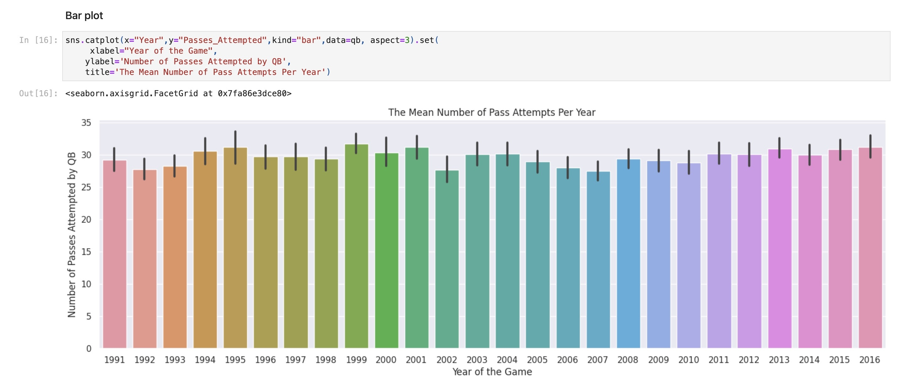
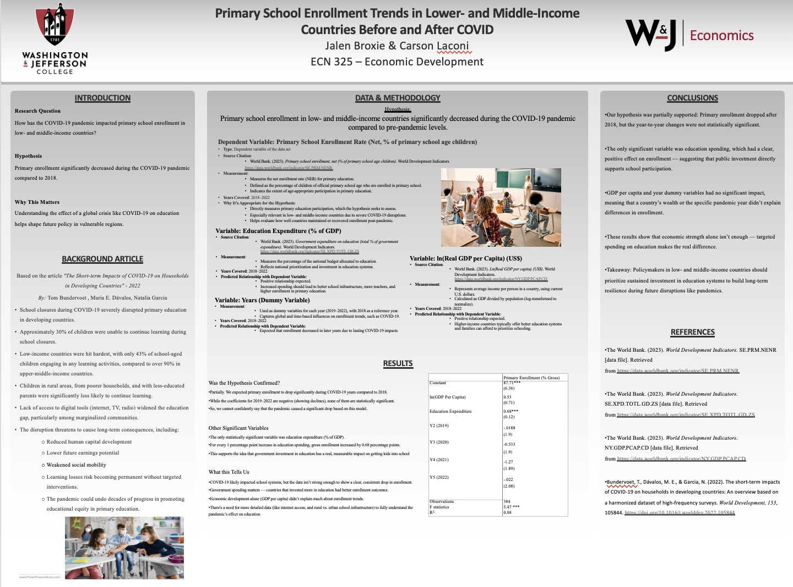
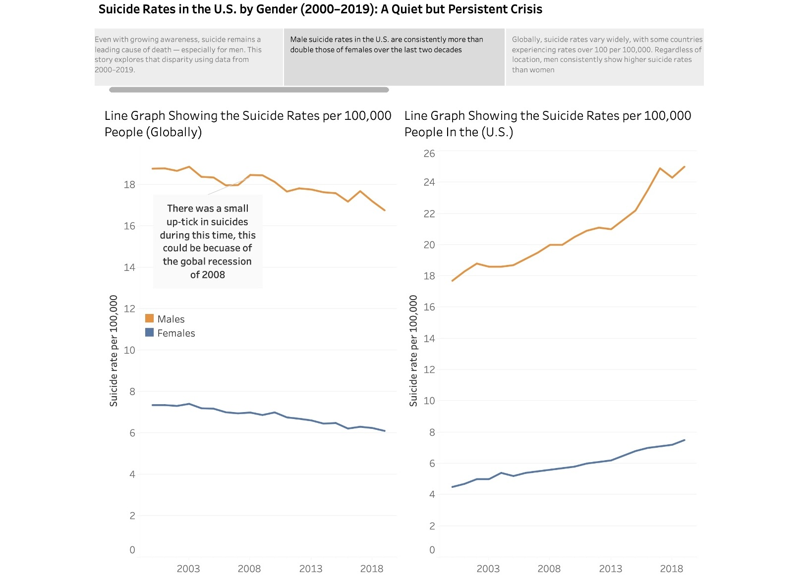

Projects

Free Throw Simulation
Analyzed shot probabilities and player performance using simulations to model free throw success. Explored impact of player consistency under pressure.

Quarterback Stats Analysis
Built visualizations to compare quarterback performance based on completion rate, passing yards, and game outcomes over time.

COVID's Impact on Primary School Enrollment
Used international education datasets to evaluate how COVID-19 affected enrollment rates in low- and middle-income countries from 2019 to 2022.

Suicide Prevention and Awareness
Created visual stories from suicide rate datasets to highlight disparities across gender, regions, and time. Aimed to promote awareness and policy insights.